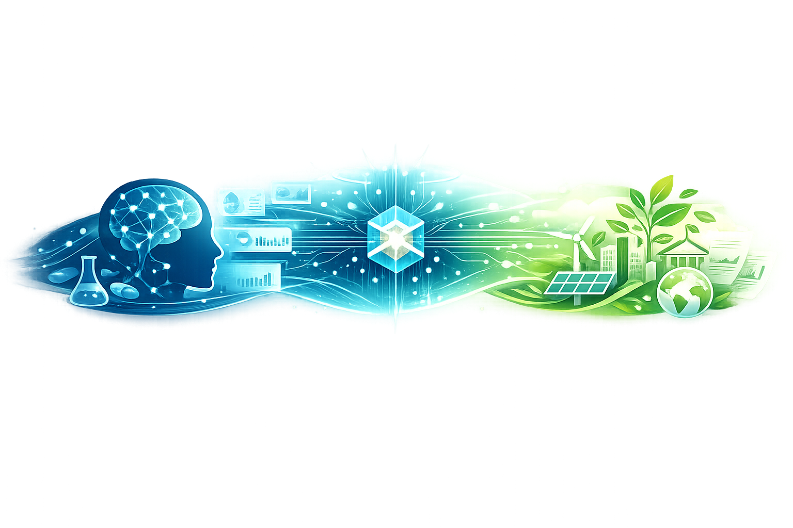

AI · DATA · RESEARCH
Artificial Intelligence for Research & Decision Making
Sviluppo competenze analitiche e AI-driven con l’obiettivo di applicarle a clinical research, salute mentale, Governance e sostenibilità.
AI & Data
Chi sono
My name is Simone Lancia,
but everybody calls me Sem.
semicit.
Lavoro all’intersezione tra intelligenza artificiale, data analysis e ambienti orientati alla ricerca.
Con una formazione in Scienze Politiche e Relazioni Internazionali, affronto i sistemi tecnici considerando Governance, regolamentazione e impatto reale insieme all’implementazione.
Sto completando una specializzazione Master’s in AI and AI Agents for Business, sviluppando competenze in Python, SQL, data analysis, visualizzazione, Machine Learning, automazione e agentic workflows.
Ambiti di applicazione
Un nucleo tecnico, due direzioni.

Questi sono gli ambiti in cui voglio applicare AI e data analysis. Sono obiettivi professionali, non finti “dieci anni di esperienza” cucinati in un calderone LinkedIn.
01
Clinical Research
Ricerca data-driven focalizzata su salute mentale, dati comportamentali, psicofarmacologia e terapie emergenti assistite da psichedelici.
02
Governance & Sostenibilità
Responsible AI, public policy e decisioni evidence-based, incluse applicazioni che coinvolgono dati ambientali e di sostenibilità.
Competenze
Strumenti per trasformare la complessità in qualcosa di utilizzabile.
Artificial Intelligence
- Fondamenti di Machine Learning
- Strumenti di AI generativa
- AI Agents
- Workflow di automazione
Data
- Python
- SQL
- Data Analysis
- Data Visualization & Storytelling
Ricerca & Governance
- Scienze Politiche
- Relazioni Internazionali
- Supporto decisionale strutturato
- Prospettiva Responsible AI
Comunicazione visiva
- Adobe Photoshop
- DaVinci Resolve
- Autodesk 3ds Max
- Design delle presentazioni
Progetti selezionati
Progetti del Master, organizzati per area.
Ogni area apre una pagina dedicata con le cover originali, brevi descrizioni e link diretti alle repository GitHub corrispondenti.
Aree dei progetti
Esplora le areePercorso
Un percorso dalla cultura visiva a policy, data e AI.
-
2012–2017
Arti visive
Liceo Artistico Via di Ripetta.
-
2019–2023
Scienze Politiche
Scienze Politiche e Relazioni Internazionali, L-36.
-
2025
Multimedia & 3D
Certificato Archibit in multimedia design e produzione visiva.
-
2025–2026
Artificial Intelligence
Specializzazione Master’s in AI and Agentic AI for Business.
-
Prossimo passo
Ricerca & Governance
Cerco opportunità in cui AI e data possano supportare decisioni human-centered.